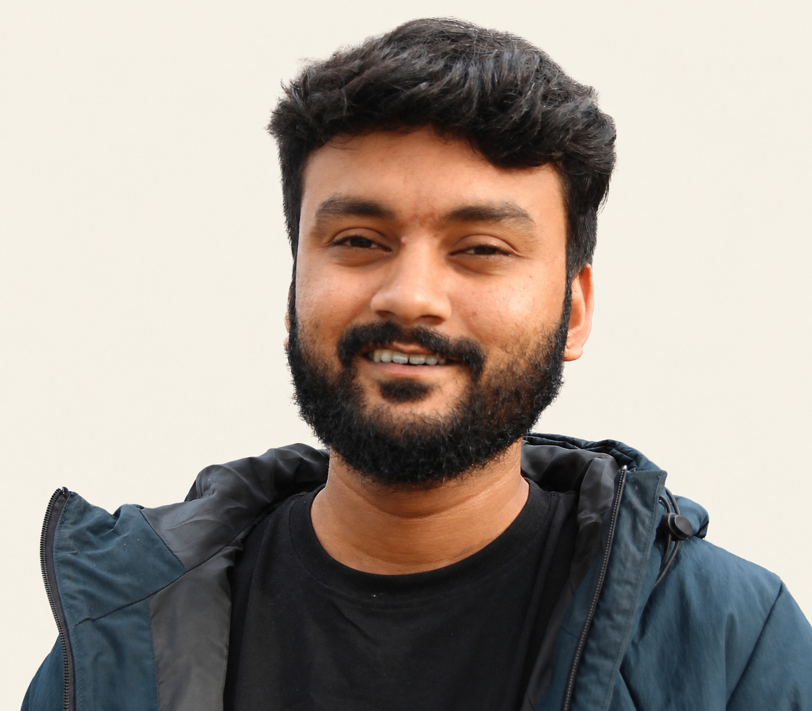
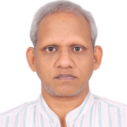
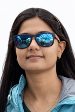
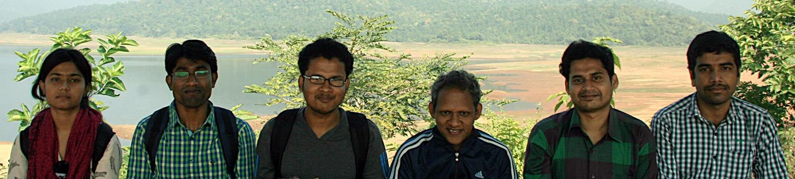
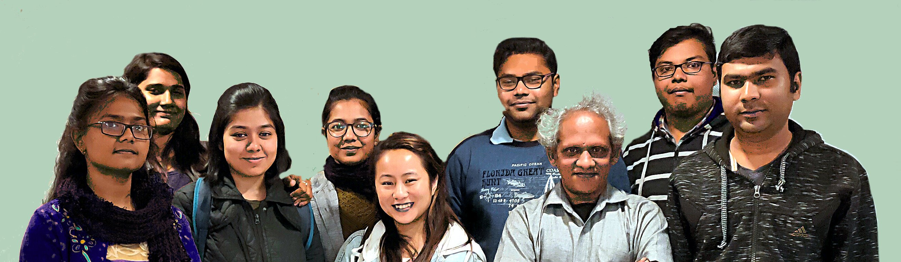

Bhrigu Chakraborty
PhD student, jointly supervised with Prof. P. K. Chattaraj.
Computational Chemistry and Molecular Discovery
Professor, Digital University Kerala
I work in computational chemistry, with interests spanning chemical space exploration, molecular and nanocluster structure prediction, reaction discovery, and theoretical methods that connect machine learning with quantum chemistry.

One or two positions may be available for strong candidates. Apply through duk.ac.in/admission/apply.
Automation, ML potentials, and robust chemical discovery pipelines
We build computational workflows that explore chemical space systematically rather than by ad-hoc trial. The core idea is a tight loop: generate structures -> optimise globally -> learn fast surrogate models -> validate with quantum chemistry.
Profiles
External links open in a new tab.

PhD student, jointly supervised with Prof. P. K. Chattaraj.
PhD student, jointly supervised with Prof. S. Bandhyopadyay.
PhD student, jointly supervised with Prof. Sukanta Mandal.
PhD student, jointly supervised with Prof. Ganesan Mani.
PhD student, jointly supervised with Prof. P. K. Chattaraj.
PhD student, jointly supervised with Prof. N. D. Pradeep Singh.
Jointly with Prof. P. K. Chattaraj.

Jointly with Dr. Kiran Gore.
Jointly with Prof. N. D. Pradeep Singh.



Start with a few representative outputs, then browse the full archive if needed
Search and filter by year. This list is scrollable.
Preprints have not been peer-reviewed.
PyAR - Python code for Aggregation and Reaction.
A free software package for automated reaction exploration and molecular aggregate prediction.
python3 -m pip install git+https://github.com/anooplab/pyar.git python3 -m pip install --upgrade git+https://github.com/anooplab/pyar.git
Recent highlights first, with the full events archive still available below
Search and filter by year. This list is scrollable.
A shorter professional profile with the essentials surfaced first